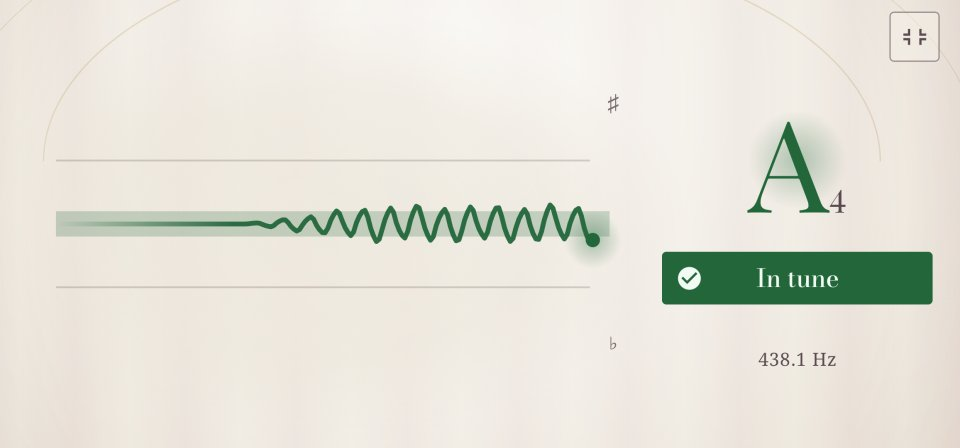

Pitch trail
The meter shows where your note is now. The pitch trail shows where it has been: the last four seconds as a line, so you can see how steady a long note is, how far a bend goes, and how wide your vibrato is.

Draw your note
- Tap the tools button above the strings (three tiles and a plus) and pick Pitch trail. The line takes the meter's place.
- Play or sing a note and hold it.
- The line runs from right to left, the newest moment at the right. Up is sharp, down is flat. The soft band in the middle is in tune, within 5 cents; the faint lines above and below it are a quarter of a semitone off, and the top and bottom edges half a semitone.
The parts of the line that were in tune take the in-tune colour. Between notes, and when the note changes, the line breaks.
What to try
- A long note. Hold it and keep the line in the band. Good practice for singers and for bowed strings, where your finger, not a fret, sets the pitch.
- A bend. Bend a note slowly and watch the line rise. The trail shows half a semitone either way, so on a longer bend the line climbs to the top and goes on around the next note. A good bend ends steady in its target note's band. Chromatic suits this best.
- Vibrato. The line becomes a wave: its height is how wide your vibrato is, the waves' spacing how fast. An even wave is an even vibrato.
- A plucked string. Pluck hard and the line starts a little high, then settles: a string sounds sharp for a moment when it is struck hard. Tune to where it settles.
Good to know
- The pitch trail works for every instrument and for your voice. The tools button is in Strings; turn the trail on there, then switch to Chromatic if you like, and the trail stays.
- A tap on a string picks it, as on the tuner.
- For a bigger trail, turn on Settings → Focus mode: Twangle turns on its side with one big meter, and the trail fills its place, as in the picture.
- With TalkBack on, Twangle says how the line runs: steady, in tune, wavering, 10 cents sharp, bending up.
- Picking Pitch trail again, or tapping the Tuner tab, brings the meter back.
For the curious: what the line is made of
It is the tuner's own reading, about 47 a second, drawn as it comes in, so it is exactly as precise as the tuner. Up and down are cents from the note or string the tuner is showing, the same as on the meter. The words TalkBack says come from the last second and a half: a straight line through the readings that rises or falls at least 15 cents is a bend; readings that stay within about 3½ cents of each other are steady; anything else wavers.